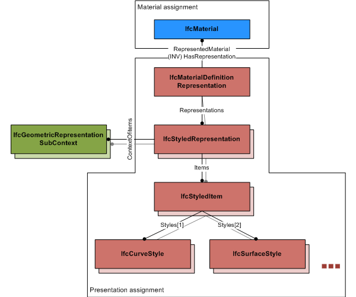

EXPRESS-G diagram
EXPRESS-G diagram| Représentation de définition de matériau | |
| Materialdefinition - Repräsentation |
IfcMaterialDefinitionRepresentation defines presentation information relating to IfcMaterial. It allows for multiple presentations of the same material for different geometric representation contexts.
NOTE The IfcMaterialDefinitionRepresentation is currently only used to define presentation information to material used at element occurrences, defined as subtypes of IfcElement, or at element types, defined as subtypes of IfcElementType. The IfcMaterial is assigned to the subtype of IfcElement, or IfcElementType using the IfcRelAssociatesMaterial relationship (eventually via other material related entities IfcMaterialLayerSetUsage, IfcMaterialLayerSet, IfcMaterialLayer, or IfcMaterialProfileSetUsage, IfcMaterialProfileSet, IfcMaterialProfile).
The IfcMaterialDefinitionRepresentation can apply
HISTORY New entity in IFC2x3.
IFC2x3 CHANGE The entity IfcMaterialDefinitionRepresentation has been added. Upward compatibility for file based exchange is guaranteed.
IFC4 CHANGE The assignment of curve, surface and other styles to an IfcStyledItem has been simplified by IfcStyleAssignmentSelect. The use of intermediate IfcPresentationStyleAssignment is deprecated.
Use definition
|
 |
As shown in Figure 384, the presentation assignment can be specific to a representation context by adding one and more IfcStyledRepresentation's. Each of them includes a single IfcStyledItem with exactly zero or one style for either curve, fill area, surface, text or symbol style that is applicable. |
|
Figure 384 — Material definition representation |
XSD Specification:
<xs:element name="IfcMaterialDefinitionRepresentation" type="ifc:IfcMaterialDefinitionRepresentation" substitutionGroup="ifc:IfcProductRepresentation" nillable="true"/>EXPRESS Specification:
| ENTITY IfcMaterialDefinitionRepresentation |
| SUBTYPE OF IfcProductRepresentation; |
|
| WHERE |
|
| END_ENTITY; |
Attribute Definitions:
| RepresentedMaterial | : | Reference to the material to which the representation applies. |
Formal Propositions:
| OnlyStyledRepresentations | : | Only representations of type IfcStyledRepresentation should be used to represent material through the IfcMaterialRepresentation. |
Inheritance Graph:
| ENTITY IfcMaterialDefinitionRepresentation |
| ENTITY IfcProductRepresentation |
|
| ENTITY IfcMaterialDefinitionRepresentation |
|
| END_ENTITY; |
 Link to this page
Link to this page